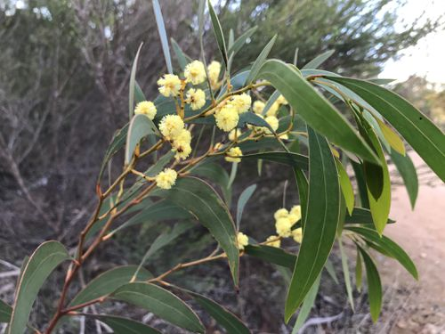
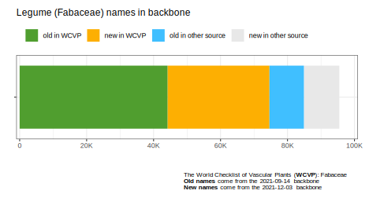
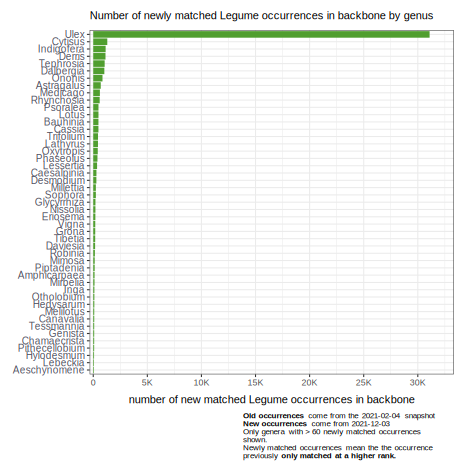

The World Checklist of Vascular Plants (Fabaceae)
The World Checklist of Vascular Plants (WCVP): Fabaceae is a new GBIF mediated checklist that drastically increases the coverage of the family Fabaceae in the GBIF backbone.

Acacia leiophylla Benth. is one of the names added to the GBIF Backbone. dudz *
The checklist has more than 87K names. Over 30K of these names are new to the GBIF backbone. Around 44K of these names were already in the GBIF backbone prior to publication of the WCVP:(Fabaceae) checklist, but are now sourced from this checklist.

Many thousands of names were added across many genera in the family. From the graph it is clear that some genera more than doubled the number of names in the group (Medicago,Ononis,Lathyrus…).

Higher-rank matches
After incorporating WCVP:(Fabaceae) into the GBIF taxonomic backbone, around 50K occurrences which previously only matched to the GBIF backbone taxonomy at a higher rank, now get matched to the backbone with no higher-rank flag. As can be seen in the graph, most of these newly matched occurrences are coming from the genus Ulex. Most of these due to the inclusion of Ulex baeticus to the backbone, this improved 33,000 occurrences from one citizen science dataset alone.

There are still around 200K Legume occurrences that get flagged as matching at a higher rank. More than 50% (140K) of these higher rank matches however are varieties or subspecies that get moved to a species level rank because of a missing name in the GBIF backbone (or misspelling, missing authorship ect.).
Decreasing the number of higher-rank matches is a way for GBIF to measure if the taxonomic backbone is improving. There are cases, however, when adding more names to a group can actually increase the number higher-rank matches in GBIF.
This can happen when GBIF only had one low-rank name but an update adds more names. Within Legumes, publishers who publish occurrences with a dwc:scientificName set to Vicia gigantea get matched to the genus Vicia because there are two names :
GBIF interpretation has no way to tell which name the publisher means. There are too many choices. All Vicia gigantea records without authorship get matched to the genus Vicia.
Legume Phylogeny Working Group (LPWG)
This effort was undertaken by the Legume Phylogeny Working Group’s (LPWG). The World Checklist of Vascular Plants (Fabaceae) is a subset of The World Checklist of Vascular Plants (WCVP). It is published by the Kew The Royal Botanic Gardens.